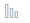

What Is Quota?
Quotas can limit the number or amount of resources available to users, such as the maximum number of ECSs or EVS disks that can be created.
If the existing resource quota cannot meet your service requirements, you can apply for a higher quota.
How Do I View My Quotas?
- Log in to the management console.
- Click
 in the upper left corner and select the desired region and project.
in the upper left corner and select the desired region and project. - In the upper right corner of the page, click .
The Service Quota page is displayed.
- View the used and total quota of each type of resources on the displayed page.
If a quota cannot meet service requirements, apply for a higher quota.
How Do I Apply for a Higher Quota?
The system does not support online quota adjustment. If you need to adjust a quota, call the hotline or send an email to the customer service mailbox. Customer service personnel will timely process your request for quota adjustment and inform you of the real-time progress by making a call or sending an email.
Before dialing the hotline number or sending an email, make sure that the following information has been obtained:
- Domain name, project name, and project ID, which can be obtained by performing the following operations:
Log in to the management console using the cloud account, click the username in the upper right corner, select My Credentials from the drop-down list, and obtain the domain name, project name, and project ID on the My Credentials page.
- Quota information, which includes:
- Service name
- Quota type
- Required quota